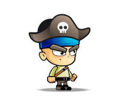
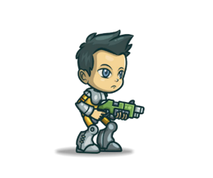
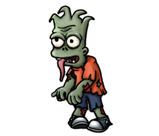

Operations Guide:
keyboard control, the player can control using keyboard with “wasd”. "w" ⬆; "a" ⬅️; "s" ⬇️; "d"️️️️ ➡
This is the player. the player can move it through keyboard control.
This is other survivor. They will enter the team and help the player to fight with zombies. More members are in the team, the winning percentage is greater.
This is the zombie. When the player meets him, there will be a fight. The fight will reduce the health value. The member in the team will be lost based on certain possibility.
Interface Guide:
This is the status of the player, including food, health, energy, day and partner. The initial value is 15 food, 100 health value, 100 energy, 1 day and 0 partner.
How to Survival?
The player should get food as much as possible. Moving and entering the room or house will consume the energy of the player. The player have 100 energy values in one day. After spending 100 energies, the day will end, and the food will be consumed in accordance to the number of the members in team. So disbanding the team at the proper time is quite necessary. Fighting with zombies will reduce the health value of the player, the teammates may die in some fights. Game over: if there is no enough food or the health value is below the zero, the game will end.